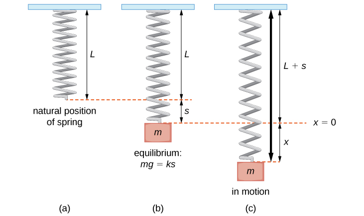

There are several physical systems that exhibit simple harmonic motion (SHM) under specific conditions. Understanding these systems helps us apply SHM equations and analyze real-world oscillations.
In these systems, a mass is attached to a spring either on a frictionless horizontal surface or hanging vertically under gravity. Both setups can undergo SHM if the restoring force is proportional to displacement from equilibrium:
This leads to motion described by the differential equation for SHM:
For vertical systems, the gravitational force shifts the equilibrium point but doesn’t affect the oscillatory motion as long as we measure displacement from the new equilibrium.
Watch this video for better understanding:
A simple pendulum is a mass hanging from a string of fixed length. When displaced by a small angle and released, it oscillates back and forth due to the component of gravity acting as a restoring force.
The restoring torque leads to SHM only when the angle is small (\( \theta \lesssim 15^\circ \)), so the approximation \( \sin\theta \approx \theta \) holds true.
These ideal systems help us explore SHM concepts, predict motion, and connect theory to experimental setups.